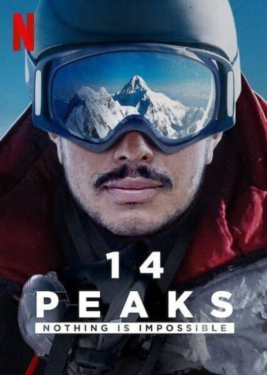

～一部激勵人心的紀錄片～
年假看了幾部紀錄片，其中Netflix於2021年推出的紀錄片《勇闖世界14 高峰》是繼2018年的《Free Solo》後，又一部以展現登山者堅強意志力、無比的勇氣來挑戰人類極限、震憾人心的寫實紀錄！
全世界所有海拔八千米以上的山峰有14座。只有不到 50 人攀登了這全部的高峰。
1986 年 10 月，意大利登山家Reinhold Messner率先登頂，他花了16年才完成這壯舉！
2013 年，韓國登山者金昌浩 (Kim Chang-ho) 用 7 年 6 個月零 10 天完成了 14 次登頂。
攀登一座 8,000 公尺高山談何容易，包含募款、前置作業、路線設計、體能訓練、天氣狀況、還有各種變數都需要很多時間來因應。
2019 年，一位國際登山界沒有聽過的名字尼泊爾人Nirmal Purja橫空出世，公開宣布要在短短七個月內完成這一長串偉大的人類探險！

世界媒體對西方登山專家在攀登上珠穆朗瑪峰、K2峰…後都大肆吹捧，卻幾乎完全忽略了參與這些壯舉的幕後英雄：幫忙背重物、搭繩梯的尼泊爾雪巴 人。
出身英國特種部隊的Nirmal Purja，組織了一個尼泊爾雪巴人的登山隊，要以完成這被國際登山界視為瘋狂的不可能任務，讓世界正視他們！
這種激勵人心的豪情壯志，是年輕人的最佳典範！
強烈推薦大家觀看